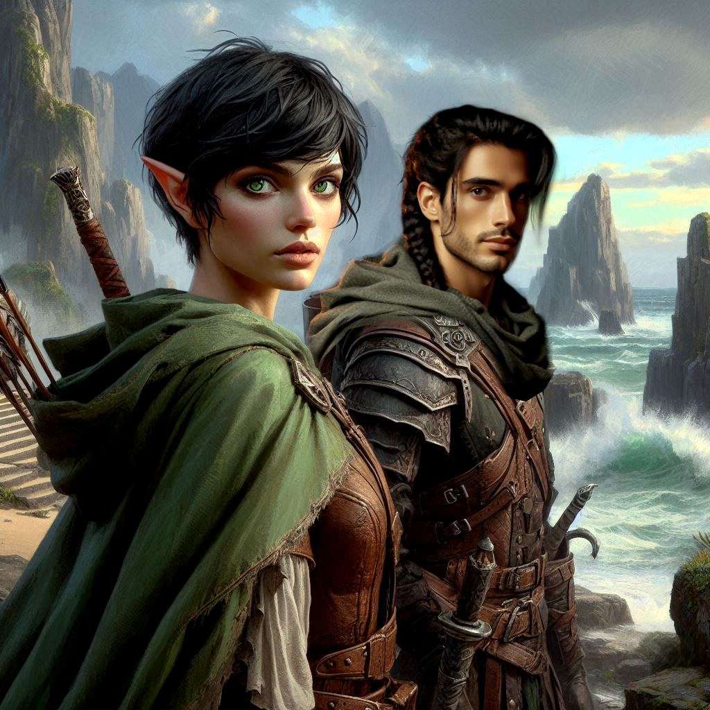
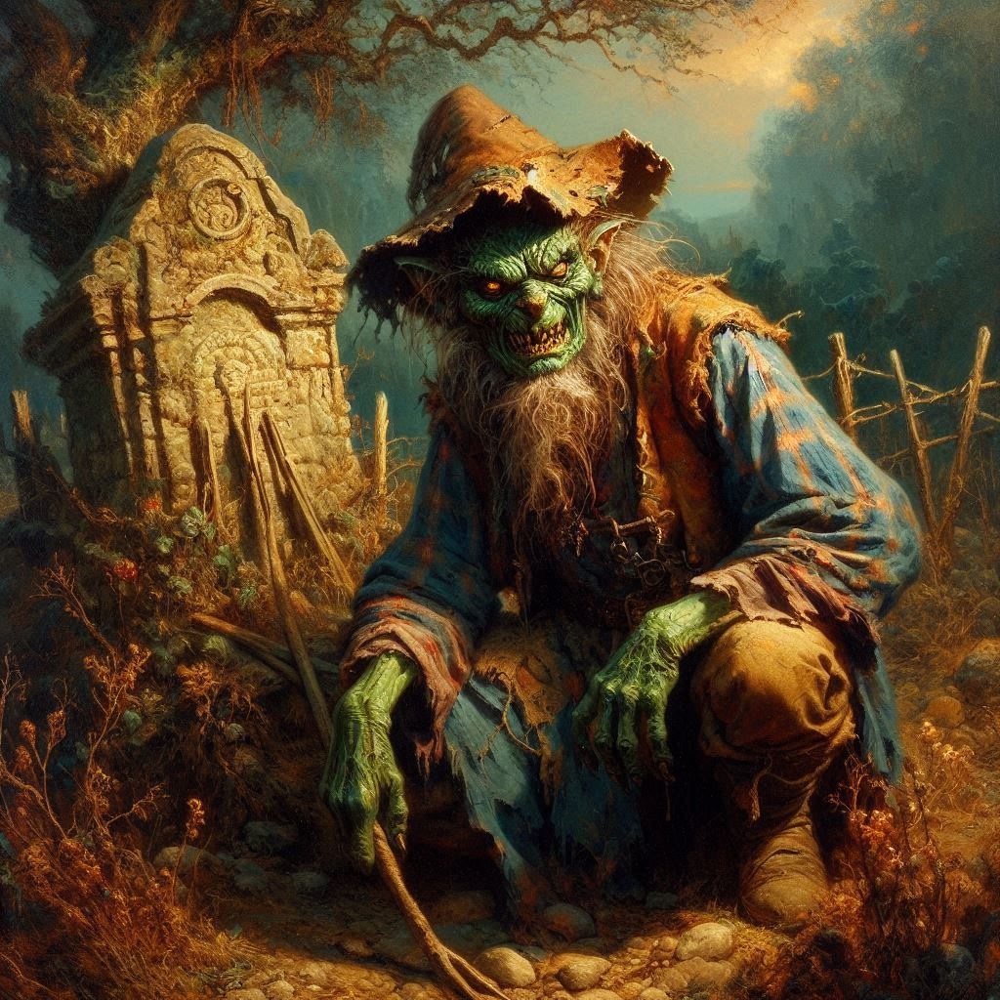

The Way to Baider
You hold the rune stone tightly in your hand, its smooth surface cool against your palm. Elias watches you intently, his blue eyes full of hope and fear. The runes etched into the stone pulse faintly, glowing with the power of ancient magic. The decision is yours, but the weight of it presses down on you. Baider is in danger, abducted by the Trade Ministry, and there’s no telling what they might do to him. You glance at Elias, his expression set with determination, waiting for your command.
“Kira,” Hawthorn calls, her eyes narrowing. “What are you doing?”
“If we rescue Baider, that may take us directly to Varis,” you argue, holding the ring up.
“And what if it’s a trap?” Hawthorn scowls. “What if it takes us away from Varis? And Jorsh.”
You look at Baider’s ring. “It may be a trap. But sometimes springing the trap is the best way to change who is the hunter and who is the hunted.”
“Don’t. Do. It.” Hawthorn is pointing her finger directly at you. She casts a furtive glance toward Elias.
"Are you sure about this?" Elias asks, his voice low, almost pleading. "Going after Baider means leaving Hawthorn behind. She won’t forgive us."
You take a deep breath, your heart torn between your loyalty to the crown and your love for the only father you've ever known. But Hawthorn’s charm spell has worn off. And you’ve never been good at following orders—not when they go against what you feel is right. And right now, Baider needs you. The thought of him suffering at the hands of Varis's mercenaries is too much to bear.
"We go," you say firmly, your voice steady despite the storm of emotions inside you. "We save Baider. No more running. No more hesitation."
Elias nods, relief softening the lines of his face. Without another word, you press the rune to the ground. Its glow intensifies, flooding the forest clearing with light. The air around you snaps and pops with energy, and before you can even brace yourself, the world shifts. The trees, the sky, the very ground beneath you swirl into a blur, and for a moment, you’re suspended in a void, weightless.
Then, with a jarring lurch, you land on solid ground again. The light fades, and you find yourself standing in the middle of a vast, crumbling temple. The stone walls are covered in moss and ancient carvings, long faded with time. The air smells of salt and decay, and as you glance around, you realize you’re perched on the edge of a cliff overlooking a dark, tumultuous sea. The waves crash violently against the jagged rocks below, the sound echoing through the ruins.
“We’re in the Realm of Shadows,” Elias whispers, his voice barely audible over the wind. “This is it.”
You nod, though your mind is still reeling from the sudden shift in location. The Realm of Shadows. You’ve heard the stories—dark, twisted tales of this place, a world governed by the demon Yaldaboath and his minions. It’s a place where the line between life and death blurs, where time itself is distorted. And somewhere in this forsaken land, Baider is being held captive.
“We need to find Baider and Onyx,” you say, your voice stronger now, more resolved. “We don’t have much time.”
Just as you turn to survey the area, a rustle from the shadows catches your attention. You and Elias both draw your weapons, but before either of you can strike, a small figure steps forward from the gloom.
“Hold your weapons, travelers,” the figure says in a gravelly voice. “I mean no harm.”
You narrow your eyes, trying to make out the shape before you. A goblin, small and hunched, with leathery green skin and sharp, yellowed teeth, stands before you. He wears a tattered cloak, and a crooked grin spreads across his face as he takes in your cautious stances.
“My name is Shamurel,” he says, bowing low with a theatrical flourish. “And you’ve landed in the right place, at the right time. I can help you.”
You exchange a wary glance with Elias. A goblin offering help in the Realm of Shadows? It reeks of a trap.
Shamurel seems to sense your hesitation. “I know what you’re thinking,” he says, waving his hand dismissively. “But hear me out. I know these lands better than anyone. I can lead you to the dark kingdom of Umbra’Thal, where your friends are being held. Without me, you’ll be lost in these twisted lands, wandering in circles while time slips away. And trust me, time moves... differently here.”
You feel Elias shift uneasily beside you. His hand tightens on the hilt of his sword, but he doesn’t speak. The weight of the decision presses on you. Shamurel could be your best chance of finding Baider and Onyx before it’s too late. But can you really trust a goblin in a place like this? He might lead you into an ambush, or worse.
Shamurel grins again, his sharp teeth glinting in the dim light. “What will it be, ranger? Will you follow me and save your friends? Or will you wander these ruins on your own and risk losing everything?”
The choice looms before you, stark and clear.
Do you follow the goblin and take the risk, trusting that Shamurel knows the way to Umbra’Thal? Or do you refuse his help, choosing instead to find your own path through this treacherous realm? The wind howls around you, and the temple stones groan under its force. Time is running out.